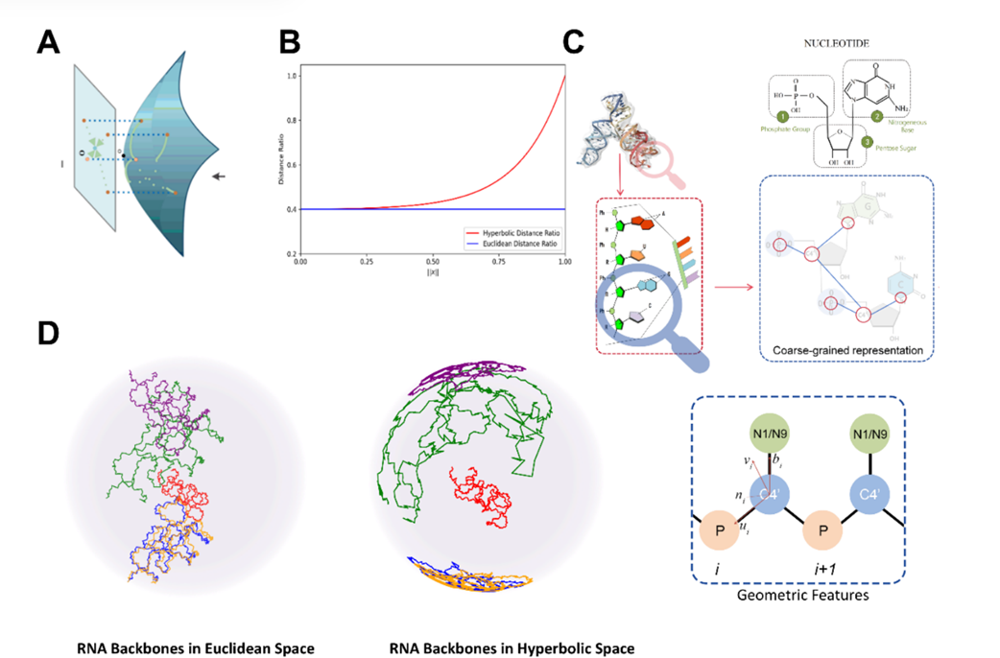

Attempt to build a Long-Range specific model
I feel excited to begin my research internship in NC State. Considering the outstanding article:
gRNAde: Geometric Deep Learning for 3D RNA Inverse Design.
This paper is clear and friendly to such “rookie” like me. Besides, it’s easy to reproduce and the source code is released at:
https://github.com/chaitjo/geometric-rna-design
Remote server initialization operations
For convenience, I rent the GPU server from AutoDL: https://www.autodl.com/, and my friend let me use his RTX4090 in U.K.
However, servers in China and UK need different settings. For the AutoDL Server, I need to use the data disk autodl-tmp more instead of the system disk, for the limited memory of system disk.
But, that leads to a problem: if use the data disk more, the CPU’s data reading and processing become slower because the data disk is cloud-based, which causes low GPU utilization (like on an RTX 5090). So it depends.
The author required the environment as follows:
Python 3.10.12 and CUDA 11.8, numpy <2.0
In fact, we need python=3.10 and CUDA 12.8(for RTX5090).
Mirror source acceleration
|
|
|
|
Environment
If our system disk doesn’t have enough space, let’ s:
|
|
|
|
And we can clean rubbish:
|
|
- For current shell, we have the followings. It is suggested that we can add it to
bashrcor.envfile, thensource ~/.bashrc.
|
|
For UK server, this is mine:
|
|
When we training the model
Data pre-process
Before we start, we need to run the process_data.py and obtain the process.pt , and then run the notebook to get das_split.pt.
In the progress, we need USalign&qTMclust,
|
|
After that, we can make a validation byUSalign -h and qTMclust -h. Pay attention to your path, such as src/data/clustering_units.py

We will skip any RNA molecules whose structural data are incomplete once we find out.

Reproduce the author’s result
The author offered an .py file or we can start by command like:
|
|

We then test it on the whole RNASolo Dataset(both train and test) first as a rough experiment. The model’s performance drops when dealing with long RNA sequences (over 100 nts). Although the recovery drops a little, the self-consistency score for secondary structure (SC Score) shows a clear linear decline.


Another way: Diffusion Model like RiboDiffusion, RIdiffusion, DiffRNAfold .etc
RiboDiffusion
To reproduce RiboDiffusion, we can set the environment like this on the RTX4090:
|
|
Although we can run it well and it shows a promising way to generate RNA Molecules, maybe there are some problems. Let’s look at the picture below, the recovery rate(you can understand it like “accuracy”) will often comes to 100%! And it drops up and down which seems no clear pattern.

To solve my confuse, I test it with RNASolo Data set(manually), but it seemed that is not obvious.

We will follow the scripts as:
|
|
However, too slow, too tired, and I design a automatic scripts like:
|
|
Well, let’ s run it with almost 13000 data to test the actually performance, and we got:


Oh, actually, diffusion model is like buying a lottery ticket. Well, well, well, let’s move on towards geometirc or Large Language Model.
Simple method for gRNAde
One simple attention layer added to the model
Since multi-layer attention mechanisms can help capture long sequences, I began by using MultiheadAttention and added a simple layer after the encoder and before the pooling set in the whole model for training. The original released code had some bugs, especially in the masking logic of the mask_coords function — it often caused dimension mismatches with the samples and threw errors. I’ve pasted my modified evaluator.py here. Also, to prevent GPU memory overflow, you’ll need to set the batch size properly.
A simple attention，models.py is here:
|
|
In the forward, we add:
|
|
and in the sample forward,
|
|
Since it’s usually hard to access wandb from local servers, and the original code relies heavily on wandb-related paths, I had to change the paths in trainer.py,
|
|
And we need to replace wandb.run.dir path to save_dir. Besides, we use autoaggresive as default.
When we wanna train it, let’ s keep it moving:
|
|
Get our first model
We finally getbest_checkpoint.h5 as the trained model，then, following the gRNAde.py，
|
|
Attention, sometimes sec_struct_utils.py will automatically remove something before we process it，so we just remove the code:
|
|
then,
|
|
It works, I test it just as epoch = 1 but the performance is bull shit.

Then we improve it to 50epochs, like the author’s default, it performed well. However, in the trainer.py, the author train it without early stopping method. So I add it to the script.


Then I am thinking about multi-scale attention, from Atlas: Multi-Scale Attention Improves Long Context Image Modeling. So, I added 3 layers of attention, but not multi-scale.
Multi-layer attention or multihead attention?
Test it on the 500 dataset, grnade is：
| Length Range | Statistic | Perplexity | Recovery | Edit Distance | SC Score | Sample Count |
|---|---|---|---|---|---|---|
| 0-100 | Median | 1.4128 | 0.56445 | 17.5972 | 0.62315 | 234 |
| 100-200 | Median | 1.26885 | 0.73585 | 30.2634 | 0.61495 | 72 |
| 200+ | Median | 1.3132 | 0.64605 | 226.875 | 0.42835 | 138 |
| 0-100 | Mean | 1.47854274 | 0.569795726 | 18.55480427 | 0.634651282 | 234 |
| 100-200 | Mean | 1.34514583 | 0.685369444 | 37.49759306 | 0.569984722 | 72 |
| 200+ | Mean | 1.41243696 | 0.639286232 | 211.1403986 | 0.421031884 | 138 |
multiheadattention:
| Length Range | Statistic | Perplexity | Recovery | Edit Distance | SC Score | Sample Count |
|---|---|---|---|---|---|---|
| 0-100 | Median | 1.30675 | 0.5532 | 17.21875 | 0.62105 | 234 |
| 100-200 | Median | 1.17275 | 0.7444 | 29.75 | 0.62205 | 72 |
| 200+ | Median | 1.30785 | 0.70485 | 183.84375 | 0.41915 | 140 |
| 0-100 | Mean | 1.36121325 | 0.572758974 | 18.34507564 | 0.638930342 | 234 |
| 100-200 | Mean | 1.24458056 | 0.704726389 | 35.62898472 | 0.605529167 | 72 |
| 200+ | Mean | 1.36845071 | 0.685876429 | 180.6455357 | 0.430865714 | 140 |
Multi-layer attention：
| Length Range | Statistic | Perplexity | Recovery | Edit Distance | SC Score | Sample Count |
|---|---|---|---|---|---|---|
| 0-100 | Median | 1.3358 | 0.5592 | 17.6667 | 0.6396 | 235 |
| 100-200 | Median | 1.2226 | 0.71205 | 33.78125 | 0.6771 | 72 |
| 200+ | Median | 1.32545 | 0.68665 | 193.0625 | 0.42465 | 140 |
| 0-100 | Mean | 1.36930766 | 0.557402979 | 18.98926 | 0.660275319 | 235 |
| 100-200 | Mean | 1.28780417 | 0.682672222 | 37.93399306 | 0.624776389 | 72 |
| 200+ | Mean | 1.40186786 | 0.673555 | 187.8361607 | 0.434380714 | 140 |
We then compare the SCC，Recovery.

After that, we test grnade and multi-layer attention on 12000+data,
Data leakage issue came up
The author had over 13,000 samples (from RNAsolo 2023), with about 12,000 usable ones. Among them, the training split has 12,000+, the validation set has about 500+, and only around 200 are in the test set.
What’s that supposed to mean? 12,000 : 500 : 200 — that’s nowhere near the usual 8:1:1 split! And it gets even worse — those 200 test samples don’t even go beyond a length of 200. Like, what am I supposed to test with that?
So we need to optimize this split method. My idea is to first split the clusters based on length ranges — 0–100, 100–200, and 200+. Then, within each range, I’ll select clusters using an 8:1:1 ratio. Finally, I’ll extract the PDB indices contained in each cluster. That way, it should make our experiments more balanced and meaningful.


Meanwhile, RNASolo has 3000+ more data in 2025 than 2023. Maybe we can use this? But let’s focus on our primary 2023 dataset to train and test equally.
Optimization methods and experiments
After I evenly split the test set, I first retrained and tested the gRNAde model. The results were a bit unstable, but it wasn’t a big deal. Simple plot below:

After that, I trained gRNAde with 100 epochs and early stopping methods with seed = 0, 1, 2 . Besides, I found that the previous attention approach helped capture long-range interactions, so I’m planning to optimize the GVP layer next.
Graph-Mamba
Mamba
Different from RNN, the SSM(State Space Model) will “remember” the graph or text interactions better.
For it promising performance,
SSMs have rich theoretical properties but suffer from high computational cost and numerical instability. So HiPPO(High-order Polynomial Projection Operator) is proposed to optimize the SSM, as follows,
Notably, it is developed into the S4 model, which shows its strong capability to capture long-range dependencies.
Graph-Mamba: Towards Long-Range Graph Sequence Modeling withSelective State Spaces
From the Graph-Mamba, we will know that,
-
SSM：State Space Models, linear.
-
Based on GraphGPS.
-
Graph-Mamba-Block(GMB) replaced Attention.
-
MPNN (Message Passing Neural Network)—GatedGCN.
-
GraphGPS(MPNN)+GMB = Graph-Mamba.
-
Optimization: Node Prioritization; Permutation-based Training.
In the same way, we just follow the algorithm and replace the gvpcov layer to our graphgpsMamba.
The code will load GatedGCN as MPNN and combine it with graphGPS then add mamba block. However, graphGPS, or more specifically, gatedGCN, is not proposed to model our RNA molecules. So in our test, it performs worse than baseline.
Long-Short Transformer and Graph Long-Short Transformer
We will learn from the article:
Long-Short Transformer: Effcient Transformers for Language and Vision
It shows a promising way to combine the different attention output. Actually, for the detail,
-
Long-Short Transformer
-
Short-term attention via sliding window
-
Long-range attention via dynamic projection
-
Aggregating Long-range and Short-term Attentions&DualLN
We then develop it into Long-short Graph Transformer, using MultiGVPConv for message passing, and sliding window for short attention, dynamic projection for long range. In the code, we mixed the edge features to node and processed the node scalar features, because the author’ s model from long-short transformer is 1D information for sentence modeling.

Unluckily, although it outperformed than any others in 200+ nts long range rna modeling, the short and medium range would drop down.
GAT-GVP long-short graph transformer
According to Graph Attention Networks, we changed the short range to the GAT to capture the neighbor interactions, maintain the 3D information.
Experiments
Learning rate
We use our graph transformer which just adds a transformer into the layer, training with different lr, and finds out that when lr=0.0002, it will be the best.
Comparison
We trained with seed0, and,
After that, we chose some of them to train 3 seeds as seed=0,1,2, then:
Other Paper Reading
Off-topic story — So last week I was totally slacking off when I suddenly saw an email from my advisor’s Zoom: “xxx invites you… at 11:30.” I thought maybe the meeting time had changed. But then I noticed the original 9:30 link was still active, not canceled.
So on the meeting day, the theory slides in my PPT still weren’t done, and I figured I’d hop into the 9:30 call just to check—you know, just in case they actually started then. And sure enough, I heard: “Alright, let’s get started.”
…And that’s how I GAME OVER…
This week I’m not doing anything fancy — just reading papers properly. Gotta figure out how to tell a story in the next report, right? Anyway, I’ll jot down a few things here that I think are somewhat insightful.
A Hyperbolic Discrete Diffusion 3D RNA Inverse Folding Model for functional RNA design。
Abstract&Introduction
- Background: revolutionary opportunities for diverse RNA-based biotechnologies and biomedical applications.
primary goal of RNA inverse folding is to design nucleotide sequences that can fold into a given RNA secondary or tertiary structure.
- Challenge: limited availability of experimentally derived 3D structural data and unique characteristics of RNA 3D structures; existing tools either focus on 2D inverse folding tasks or learn limited 3D structural features from experimentally determined and predicted 3D structure datasets for the 3D inverse folding problem.
- High-resolution RNA structures are significantly less common compared to those of proteins.
RIdiffusion, a hyperbolic denoising diffusion generative RNA inverse folding model.
RIdiffusion efficiently recovers the distribution of nucleotides for targeted RNA 3D structures based on limited training samples using a discrete diffusion model.
Honestly, the background part is usually just the same old recycled stuff, but different papers tend to focus on different challenges. What really stood out to me in this one is how it combines geometric deep learning with a discrete diffusion model — plus, the evaluation is super thorough. You can tell they really put in the work on this one.
- structure based.
- the promise of creating novel functional RNAs.
The “low-sample” challenge underscores the importance of learning efficiency in generative models in 3D RNA inverse folding tasks.
Diffusion: modeling inverse folding problem as diffusio ndenoising.
RNA structures exhibit inherent hierarchical organization (e.g., from base-paring, secondary structure elements and remote pseudoknots to complex 3D shapes)——hyperbolic space.
Why? Because:
compared to Euclidean space, a hyperbolic distance better captures molecular differences and improve performance in small molecule generation tasks
In other words, this HB metric captures structural features better than the Euclidean one — or you could say it reflects the more subtle structural differences more effectively. The authors illustrate this with the following figure:
We can mainly focus on panels A and D. Panel A shows a schematic of the transformation, while panel D visualizes how the RNA structures are distributed in the HB space. Simply put, different chains (or backbones) are separated more clearly there — which means the features can be captured more effectively.
about the model
hyperbolic equivariant graph neural networks (HEGNNs) to parameterize the discrete diffusion model, and effectively capture the 3D structural characteristics by incorporating RNA’s geometric features and topological properties into the generation process.
framework：
MATERIALS AND METHODS
I would just understand the Hyperbolic Equivariant Graph Denoising Network, Normally, models tend to lose some information when dealing with this kind of 3D data.
So the author utilizes SE(3) equivariant neural layers from Equivariant Graph Neural Networks (EGNN).49 This approach allows the model to preserve SO(3) rotational equivariance and E(3) translational invariance when updating the representations of nodes and edges, thereby retaining geometric information and ensuring the robustness and effectiveness of the hidden representations, to enable the EGNN network to update edge.其实就是加了个层。
Datasets and Setup
So how the author split？
We followed the same splitting methods outlined in RDesign to ensure a high-quality dataset with only experimentally derived structures, which consists of 1773 structures for training, 221 structures for validation, and 223 structures for testing in an 8:1:1 ratio.
According 8:1:1.
In addition, to evaluate the generalization ability, the authors used PSI-CD-HIT to cluster the data based on nucleotide similarity, setting similarity thresholds of 0.8, 0.9, and 1.0。
Evaluation Metrics
Besides Recovery Rate, there is Macro-F1 score,
$$ NoveltyScore(x_i) = 1.0 - RecoveryRate(x_i,x_{mostsimilar}) $$The Macro-F1 score is used to assess the accuracy and comprehensiveness of the model in predicting protein or RNA sequences, particularly in cases where the distribution of different letter residues is imbalanced, by evaluating the Macro-F1 score for each residue in the sequence.
There’s also a GSN (Global-scale Novelty) metric, where 100 samples are drawn using RR-based stratified sampling.
And there’s another one, quite similar to SCC — it’s based on structures folded with RhoFold, then structural similarity is computed using US-align, which gives the RMSD value.
Baselines
1 RNA tertiary structure inverse folding model, 3 protein tertiary structure inverse folding baselines, 1 Transformer-based graph GNN network for graph structure: gRNAde, PiFold, StructGNN, GVP-GNN, and GraphTrans.
Author of RiboDiffusion&RhoDesign provided no training scripts in the released code.
Results
we divided the dataset of seq-0.8 into short (<50nt), medium (50~100nt), and long (>100nt)
Emm… is that long???
The novelty of generative designs can be viewed from two perspectives: sequence novelty and physicochemical properties novelty. In our case, sequence and physicochemical properties (derived from sequence) novelty are important in RNA 3D inverse folding. Indeed, sequence features such as physicochemical properties play a crucial role in functional RNA design. For instance, it was reported that natural RNAs show privileged physicochemical property space which is related to their biological functions. Other sequence features like GC content are important properties related to developability of RNA molecules. Given the nature of one-to-many relationship between the targeted RNA structure and its possible sequences, the novelty and diversity of generated sequences are important considerations for improving physicochemical properties of the designed sequences.
physicochemical properties space, evaluation,
Beyond RNA Structure Alone: Complex-Aware Feature Fusion for Tertiary Structure-based RNA Design
Abstract
- important in synthetic biology and therapeutics
- limitation: overlook the role of complex-level information
In fact, the authors argue that analyzing RNA alone isn’t enough — you also have to look at the related complexes.
our method incorporates protein features extracted by protein language model (e.g., ESM-2)
To address bio-logical complexity of protein-RNA interactions, propose a distance-aware filtering for local features from protein representation.
a high-affinity design framework that combines our CARD with an affinity evaluation model.
Final goal: produce high-affinity RNA sequences
Introduction
- more sophisticated computational approaches that can model the complex relationship between RNA sequences and their structures.
The authors also mentioned LEARNA and Meta-LEARNA, which are RL-based, as well as RDesign and RhoDesign, which are based on 3D graph representations.
- different from protein folding which roughly follows Anfinsen’s rule, RNAs are highly flexible and rely on interactions with proteins, DNA, and other biomolecules to achieve folding.
- RNAs may adopt various conformations by interacting with distinct macromolecules at different stages of functioning. At different stages, they also bind with macromolecules.
This paper considers both RNA structural features and protein–RNA interactions to generate sequences comprehensively.
The outline, as shown in Figure 1, includes a pre-trained protein language model (PLM) to handle proteins, and a Complex-Aware Transformer (CAFormer) to integrate RNA and protein features. They use distance-aware filtering to select relevant regions while ignoring unrelated areas. This setup allows the model to capture the context of protein–RNA complexes and focus on the interaction regions within the complex.
Overall, the authors iteratively screen the generated RNA sequences: candidate sequences are first filtered based on predicted affinity scores, and then structural compatibility is validated using multiple folding models.
Affinity Evaluation
Regarding “affinity”, the authors mention predictive models like PNAB, DeePNAP, PredPRBA, PRdeltaGPred, and PRA-Pred.
However, structural data for RNA–protein complexes is very limited. CoPRA integrates PRA310 and introduces a multi-modal model, which combines RNA and protein language models with comprehensive structural information.
Additionally, the authors also discuss the development and background of inverse folding:
RNA design aims to generate sequences that fold into predefined structures. Early methods focused on secondary structure optimization, using thermodynamic parameters and energy minimization. Tools like RNAfold predict RNA secondary structures based on the minimum free energy principle. As understanding of RNA structure has advanced, focus has shifted to complex tertiary structure-based design due to RNA’s high conformational flexibility, which challenges traditional thermodynamic methods. Recent deep learning approaches for RNA tertiary structure design include gRNAde, which utilizes geometric deep learning and graph neural networks to generate RNA sequences; RiboDiffusion, a diffusion model for inverse folding leveraging RNA backbone structures; RDesign, which employs a data-efficient learning framework with contrastive learning for tertiary structures; and Rhodesign, focusing on RNA aptamer design by guiding sequence generation through structural predictions.
Methods

It’s actually quite comprehensive. Regarding that filter, since a single protein can bind RNA through multiple sites (different conformations), and a single RNA can also interact with different proteins, the authors provide the following figure to illustrate this:
COMPLEX-AWARE ATTENTION BLOCK
For this part, the authors first concatenate the RNA and the filtered protein information, and then use N multi-head self-attention layers to enhance the model’s ability to capture contextual interactions.
After that, they use a Transformer-based decoder, similar to RhoDesign, to generate RNA sequences. The decoding is framed as a next-token prediction task, where the decoder predicts the next nucleotide based on the previously generated ones. During training, the model is optimized using cross-entropy loss.
High-Affinity RNA Design Framework
- structure-to-sequence design model and evaluation tools.
First, RNA sequences are designed using the authors’ model to meet complex-specific constraints (like binding sites and interactions). The sequences are then evaluated with ensemble regression models trained on the PRA201 dataset, while their structures are folded using AlphaFold3, RhoFold, and RoseTTAFold2NA to calculate RMSD. In each iteration, the top 10%–20% of sequences are selected, and the process is repeated until an optimal set is obtained.
Experiments
Dataset and Implementation Details
- Datasets: PRI30K and PRA201.
- The latter is used for the blind test, while the former removes structurally similar cases for training and testing. After processing, the dataset contains 21,050 protein–RNA pairs and 2,309 RNA sequences. Clustering is also done using CD-HIT with an 80% similarity threshold.
- 200 epochs, batch size of 48 (24 per GPU), attention blocks N = 6, local filtered size K = 64, ESM-2 650M.
- Comparison: SeqRNN and SeqLSTM, StructGNN, GraphTrans, RDesign, and RhoDesign.
Ablation Studies
key components of method, including the number of attention blocks in CAFormer, the fashion of filtering the protein representation, and the choices of protein representation model.
RiboDiffusion: tertiary structure-based RNA inverse folding with generative diffusion models
Abstract:
-
scarcity of data, nonunique structure-sequence mapping, flexibility of RNA conformation.
-
growing applications in synthetic biology and therapeutics;
-
inverse folding problem;
Introduction:
-
RNA-based biotechnology;
-
early methods for focus on folding into RNA secondary structures; Some use efficient local search strategies guided by the energy function; Or globally by modeling the sequence distribution or directly manipulating diverse candidates;
-
DAS physically based approach, but still constrained by local design strategy and computational efficiency.
– only 2D, without considering 3D structures of RNA
Methods:
Diffusion;
Three-atom coarse-grained representation including the atom coordinates of C4’, C1’, N1 (pyrimidine) or N9 (purine) for every nucleotide;
Consider the RNA inverse folding problem as modeling the conditional distribution p(S|X);
Based on the GVP-GNN architecture;
Results
Dataset: predicting structures with RhoFold. The structures predicted from RNAcentral sequences are filtered by pLDDT to keep only high-quality predictions, resulting in 17 000 structures.
Cluster: sequence–PSI-CD-HIT to cluster sequences based on nucleotide similarity. We set the threshold at 0:8=0:6=0:4 and obtain 1252=1157=1114 clusters; structure similarity clustering, calculate the TM-score matrix using US-align and apply scipy, achieve 2036=1659=1302 clusters with TM-score thresholds of 0:6=0:5=0:4. 15% for testing, 10% for validation.
Evaluation Metrics:
RR, F1 Score(RNAfold and RMSD)
Learning to Design RNA
Abstract:
-
Based on deep reinforcement learning;
-
Jointly optimize over a rich space of architectures for the policy network, the hyperparameters of the training procedure and the formulation of the decision process.
Introduction:
-
LEARNA: deep RL algorithm for RNA Design. Given a target secondary structure, can predict the entire RNA sequence. After generating an RNA sequence, then folds this and locally adapts it, and uses the distance of the resulting structure to the target structure as an error signal for the RL agent;
-
Meta-LEARNA: learns a single policy across many RNA Design tasks directly applicable to new RNA Design tasks;
-
The first application of architecture search (AS) to RL;
-
New benchmark dataset with an explicit training, validation and test split;
-
Faster.
THE RNA DESIGN PROBLEM:
-
Folding algorithm: zuker;
-
Loss Function: Hamming diastance.
LEARNING TO DESIGN RNA:
Action Space, State Space, Transition Function, Reward Function;
-
One problem of current deep reinforcement learning methods is that their performance can be very sensitive to choices regarding the architecture of the policy network, the training hyperparameters, and the formulation of the problem as a decision process.
-
RL often yield noisy or unreliable outcomes in single optimization runs, (a) The number of unsolved sequences, (b) the sum of mean distances, (c) the sum of minimum distances to the target structure.

RNA-DCGen: Dual Constrained RNA Sequence Generation with LLM-Attack
-
Challenge: recent diffusion and flowmatching-based models face two key limitations: specialization for fixed constraint types, such as tertiary structures, and lack of flexibility in imposing additional conditions beyond the primary property of interest.
-
Generative –> Search;
-
Dual Constrained: on the sequence itself and on specified constraints.